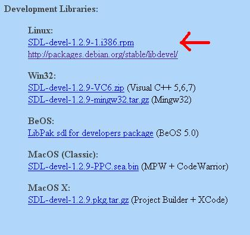

Setting up SDL in Linux
Last Updated 6/14/11
Since there are so many flavors of Linux these tutorials might not work on your Linux set up. Try reading the SDL Linux FAQ. If you've tried everything and are still having problems, contact me and I'll try to add on a distro specific fix.A Setting up SDL 2 on linux tutorial is now available.
1)
For Ubuntu users, it's recommended that you use the built in package manager. You can access the package manager
going to system -> administration -> Synaptic Package Manager. Once you're in, search for "libsdl1.2-dev"
(without quotes), which is the SDL development package. Once you find it, click and install it.
2) For those of you who have Advanced Packaging Tool available you can enter the command:
3) For the Yellow dog Updater, Modified you can enter the command:
4) For RPM based distros, you'll need the SDL development RPM.
You will find them on the SDL website, specifically on this page.
Scroll Down to the Development Libraries section and download the Linux development library:
Now run the RPM and let it do it's thing.
Now that you've installed the development libraries, it's time to start up your IDE/compiler.
2) For those of you who have Advanced Packaging Tool available you can enter the command:
apt-get install libsdl1.2-dev libsdl-image1.2-dev libsdl-mixer1.2-dev libsdl-ttf2.0-dev
You need to have root priviledges, so use the "su" command or "sudo" command.3) For the Yellow dog Updater, Modified you can enter the command:
yum install SDL-devel SDL_mixer-devel SDL_image-devel SDL_ttf-devel
As with apt-get, you'll need root priviledges.4) For RPM based distros, you'll need the SDL development RPM.
You will find them on the SDL website, specifically on this page.
Scroll Down to the Development Libraries section and download the Linux development library:

Now run the RPM and let it do it's thing.
Now that you've installed the development libraries, it's time to start up your IDE/compiler.
| Select Your IDE/Compiler | |
| Anjuta 1.2.2 | |
| KDevelop 3.2 | |
| Eclipse 3.0 | |
| Command Line | |
| Back | |